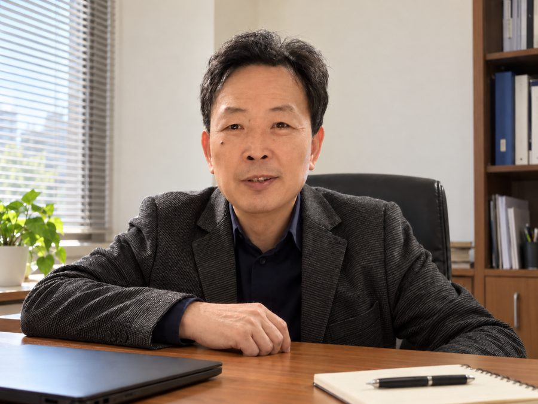

从通信网络维护到天线测试
瑞吉自 1997 年起保障通信网络运行。我们的每一条维修业务都由自研测试系统支撑，TTC3000 天线测试系列延续了同样的工程方法。
一个集团，一脉相承的工程能力
瑞吉 1997 年创立于西安，是中国最早从事通信设备维修的企业之一。我们以自主研发的测试系统和维修服务起家，长期服务运营商与设备商，是国家级高新技术企业。
2021 年，瑞吉联合西安电子科技大学天线与电磁散射研究所资深教授，在东莞松山湖设立天线测试业务板块，将近 30 年的测试系统研发经验与深厚的天线测量专长相结合，研发 ANTestify 天线测试系统，并负责集团的国际业务。
每一个阶段，都建立在上一阶段之上
- 1997
瑞吉在西安创立，是中国最早从事通信设备维修的企业之一。
- 2000
创始人创业故事获中央电视台报道。
- 2000s
六大系列自研测试系统：程控交换机、小灵通基站、通信电源、数字微波、宽带接入、GSM/CDMA 基站。
- 2010s
GSM 基站仿真测试平台、通信电源综合测试平台等通过中国通信企业协会运维专业委员会科技成果鉴定。
- 2012–15
阿尔及利亚。瑞吉服务团队常驻首都阿尔及尔，作为独立维修企业提供通信设备维修服务。
- 2021
在东莞设立天线测试业务板块，联合西电天线专家专注天线测试。
- 2024
启动海南移动天线检测、维修与翻新项目。
- 2025
与泰尔实验室签订战略合作协议；承接中国电信西安分公司无线网直放站及大张角天线维修（2025–2027）。中国通信学会组织专家组首次调研瑞吉快速检测设备。
- 2026
中国通信学会专家组第二次调研，审议无源基站天线故障快速检测设备团体标准草案。增益测量能力通过泰尔实验室测量审核。开拓国际市场。
驻扎阿尔及尔，2012–2015
2012 年至 2015 年，瑞吉派驻服务团队常驻阿尔及利亚首都阿尔及尔，为在网通信设备提供维修服务。瑞吉作为独立维修企业开展业务，拥有自己的工程师、测试平台和维修流程，与包括华为在内的中国设备商项目团队并行工作。
在距离西安约 9,000 公里的地方独立开展维修业务，让我们懂得如何用自己的工具和流程，在海外支持客户与合作伙伴。
独立运营
自己的工程师、测试平台和维修流程。
本地驻扎
团队常驻首都，贴近所服务的网络。
创始人、董事长

朱建平
瑞吉创始人、董事长
- 华中科技大学通信工程硕士，高级工程师。
- 曾就职于工信部第十研究所。
- 1997 年创立瑞吉，带领公司近三十年，打造了国内最早的通信设备维修与测试系统企业之一。2000 年中央电视台报道其创业故事。
- 带领瑞吉进军基站天线测试领域并开拓国际市场。
与我们合作的单位
| 中国移动 | 网络设备技术服务；2024 年起承接海南移动天线检测、维修与翻新 |
|---|---|
| 中国电信 | 中国电信西安分公司无线网直放站及大张角天线维修（2025–2027） |
| 华为、中兴 | 长期提供通信网络设备测试、维修与维护服务，包括直放站设备 |
| 泰尔实验室 | 增益测量能力测量审核；2025 年签订战略合作协议 |
| 西安电子科技大学 | 天线与电磁散射研究所资深教授参与创立瑞吉东莞天线测试业务板块 |
| 中国通信学会 | 天线与射频分会指导瑞吉研发无源基站天线快速检测技术；2025 年 11 月、2026 年 3 月两次组织专家组调研 |
让完整的天线测试足够快、足够经济，覆盖每一副天线
在工厂、在库房、在上塔前、在维修后。我们希望成为全球天线制造商与网络运营商信赖的测试伙伴，让网络以更低成本、更少浪费实现更好性能。
可靠
我们源于网络维护，设备为日常、可重复使用而设计。
严谨
以测量说话。测试方法遵循国家与行业天线标准，并经独立实验室比对验证。
合作
从首次试用到日常运行，全程提供培训与技术支持。
绿色
以修代换。维修翻新让闲置天线重新成为网络资产，减少电子废弃物。